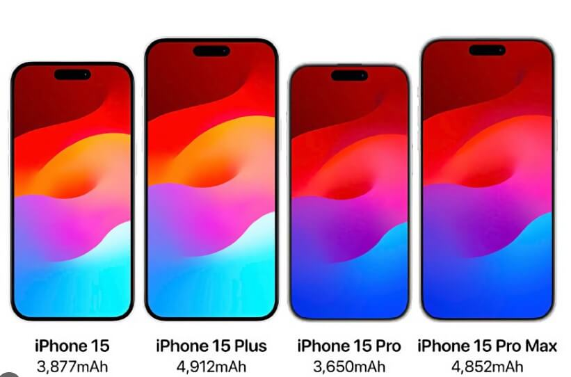

This year marks 6 years since the release of the iPhone X: at the moment, this is the last smartphone from Apple, in which there were serious changes - it is not without reason that it is called revolutionary. However, since then Apple manages with only minor improvements, exploiting the same form factor. Changes to be: judging by leaks from insiders, the iPhone 15 will receive some cool chips that have long been asked for it. They are the ones who will make you buy the 2023 model, not last year. We tell what's new in the iPhone 15 and how it will be better than last year's models.
What will be the iPhone 15
As you remember, now the base iPhone 14 has the old Face ID cutout, and the iPhone 14 Pro has an island Dynamic Island. This year, Apple will return to the new iPhones another distinctive feature - thin bezels. around the display. This is reported by an insider Ice Universe, who claims that the thickness of the display frame iPhone 15 Ultra will be smaller than Xiaomi 13 (1.81 mm). According to the source, it will be 1.55 mm, which is almost 1 mm thinner than the iPhone 13 Pro Max (2.42 mm).
For comparison, at the moment, the thickness of the frame around the screen of the iPhone 14 Pro is 2.17 mm, while the Samsung Galaxy S23 has 1.95 mm. Due to this, the usable screen area will also increase, although now the flagship from Apple, and so it is 88%. In any case, it's nice that in Cupertino remembered the once important feature of their smartphones, as well as the fact that the iPhone - sort of like frameless.
Buttons on iPhone
In 2022, Apple made Steve Jobs' dream come true by releasing the iPhone 14 without a SIM card slot. But one of the founders of the company dreamed of creating a smartphone without physical keys. Bye Cupertino people are not ready for such a step, but there will be one interesting feature - the new smartphone will receive one long volume button. At the same time, it will be capacitive: that is, physical there will be no pressing - most likely, we are talking about the similarity of the "Home" button in the iPhone 7.
Another interesting insider says that the sound switch on the iPhone will seriously change and will turn into a click button. It is not clear from the report how this will work: most likely, we are talking about that the key will have to be held down to turn off the sound. Apparently it can be done without looking, with one touch, holding the phone in your pocket. This solution is better than existing: now it is very difficult to hook the slider with short nails, and it is also getting more complicated the presence of a dense case on the iPhone.
Iphone screen size
Android smartphones have grown in size for a long time, and their screens have come close to the 7-inch mark. For Apple, the diagonal seems to be not so important, so the basic iPhones still have a 6.1-inch display, while in the iPhone SE it completely “froze” at around 4.7 inches. This year go to You definitely don’t want Android: Apple will increase the size of iPhone screens. But not everyone.
The display of the iPhone 15 and iPhone 15 will grow from 6.1 to 6.2 inches for the first time since the iPhone XR, which was released in 2018.
But the screen of the iPhone 15 Plus and iPhone 15 Pro Max (or Ultra) will remain the same - 6.7 inches. Large smartphones decided not to update, since not much time has passed since the "enlargement" of the screen - only 3 years old. Then the iPhone 12 Pro Max became 0.2 inches larger.
The upgrade seems, at first glance, frivolous, but it is not: the iPhone screen itself will become larger and more by reducing the scope. But there is a caveat: most likely, the smartphone itself will grow in size, as a larger screen will require an increase in battery capacity. But the refusal to increase Pro Max and Plus You can understand - the line between them and the iPad mini 6 (8.3 inches) is too thin.
Accordingly, covers for the regular iPhone 15 from the previous model will no longer fit: so, if you are planning to buy a new iPhone, it is better to refuse to buy expensive accessories. Take a closer look at this inexpensive model, which we talked about not so long ago.